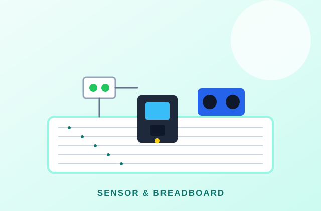
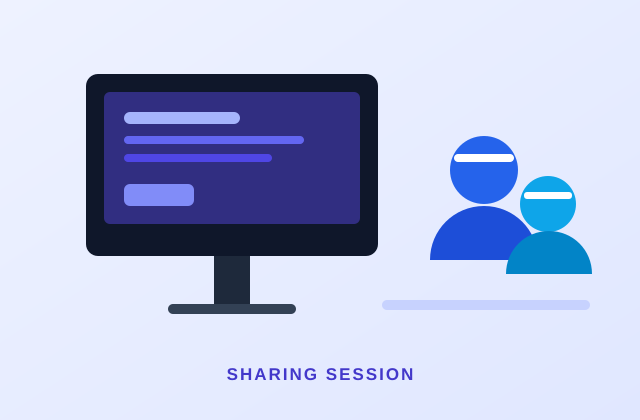
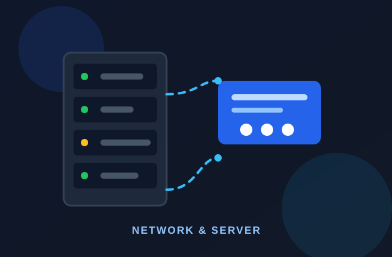

Workshop soldering
Latihan merakit dan memeriksa sambungan papan sirkuit dengan prosedur keselamatan.
Galeri
Dokumentasi kegiatan, pengujian, dan momen berbagi pengetahuan di Laboratorium IoT ILMS.
Dokumentasi
Setiap kegiatan memiliki cerita: mulai dari menyiapkan alat sampai mengevaluasi hasil.
Latihan merakit dan memeriksa sambungan papan sirkuit dengan prosedur keselamatan.

Pengujian sensor, logika kendali, dan performa robot pada lintasan sederhana.

Membaca data sensor dan menampilkannya pada dasbor pemantauan.

Merangkai sensor pada breadboard dan menguji pembacaan data.

Presentasi hasil proyek dan diskusi terbuka antaranggota laboratorium.

Pengenalan konektivitas perangkat, server, dan pertukaran data.
Video
Video berdurasi 12 detik ini merangkum suasana belajar, pengembangan prototipe, dan kolaborasi di ILMS.
Ingin mendengar sambutan audio? Buka halaman beranda dan putar audio sambutan pada bagian media.
Buka Media BerandaKategori
Dokumentasi dikelompokkan agar mudah ditemukan kembali.
Kegiatan belajar terjadwal dengan modul, alat, dan pendampingan asisten.
Eksperimen, pengujian, dan pengembangan prototipe bersama anggota.
Presentasi, diskusi, dan kegiatan berbagi pengetahuan antardivisi.
Kirim informasi kegiatan agar dapat ditambahkan ke galeri laboratorium.